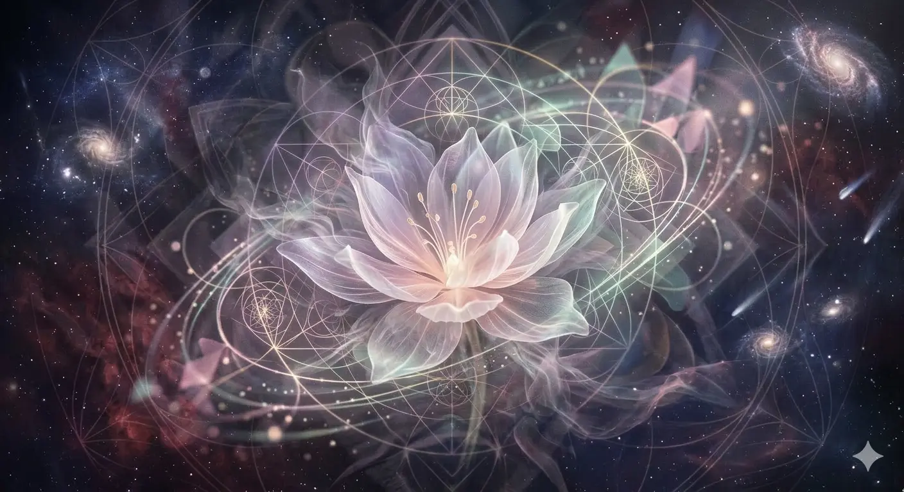

Light Flower
An image in pastel tones, with a delicate and ethereal flower at its center, surrounded by geometric patterns that evoke a sense of light and movement. The flower itself might have translucent petals and an almost ethereal texture, as if made of delicate and fragile materials.